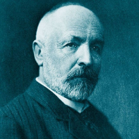

Daftar Isi
- Beranda
- Pythagoras
- Euclid
- Archimdes
- Leonardo Fibonacci
- Isaac Newton
- Leonhard Euler
- Carl Friedrich Gauss
- Georg Cantor
- Alan Turing
Hubungi Admin


JAM
lainnya
10 tokoh berpengaruh dalam matematika
Siapa itu Georg Cantor?

Georg Cantor (lahir pada 3 Maret 1845 – meninggal pada 6 Januari 1918) adalah seorang matematikawan Jerman yang sangat berpengaruh dalam pengembangan teori himpunan dan matematika modern. Ia terkenal karena gagasannya tentang teori himpunan tak terhingga dan konsep-konsep baru dalam matematika yang mengubah cara kita memahami bilangan dan ruang.
Sejarah Hidup:
Cantor lahir di Saint Petersburg, Kekaisaran Rusia (sekarang Rusia) dari keluarga orang tua berdarah Jerman. Ia belajar di berbagai universitas prestisius di Eropa, termasuk Universitas Zürich, Universitas Berlin, dan Universitas Halle-Wittenberg. Selama perjalanan hidupnya, Cantor mengalami berbagai tantangan dalam menjalani kehidupan akademik dan kesehatan yang tidak stabil.
Pemikiran dan Kontribusi:
Teori Himpunan: Kontribusi paling terkenal Cantor adalah pengembangan teori himpunan, terutama konsep himpunan tak terhingga dan konsep kardinalitas (ukuran himpunan). Cantor memperkenalkan konsep angka kardinal, yang digunakan untuk membandingkan ukuran himpunan. Ia membuktikan bahwa ada lebih banyak bilangan real daripada bilangan bulat, dan bahwa ada banyak tingkatan tak terhingga kardinalitas.
Konsep Bilangan Transfinit: Cantor memperkenalkan konsep bilangan transfinit, yang merupakan ekstensi konsep bilangan alami (0, 1, 2, ...) ke bilangan yang lebih besar dari segala bilangan alami namun tetap tak terhingga. Ini melibatkan bilangan seperti aleph-null (ℵ₀) yang mewakili ukuran himpunan bilangan alami, dan berlanjut dengan bilangan transfinit yang lebih besar seperti aleph satu (ℵ₁), aleph dua (ℵ₂), dan seterusnya.
Teorema Ketidakdapatbandingan: Salah satu teorema terkenal Cantor adalah Teorema Ketidakdapatbandingan, yang membuktikan bahwa tidak mungkin ada bijeksi (pemetaan satu-satu dan pada) antara himpunan bilangan alami dan himpunan bilangan real. Ini menunjukkan bahwa bilangan real lebih "banyak" daripada bilangan alami dalam arti kardinalitas.
Hipotesis Kontinuum: Cantor memperkenalkan Hipotesis Kontinuum, yang merupakan asumsi mengenai kardinalitas himpunan bilangan real. Pertanyaan ini menjadi salah satu tantangan terbesar dalam matematika hingga sekarang. Cantor mencoba meneliti hipotesis ini, tetapi tidak dapat membuktikannya sepenuhnya.
Karya dan Pengaruh:
Karya-karya Cantor mengubah fundamental cara kita memahami ukuran himpunan dan bilangan. Pemikirannya mengarah pada pengembangan topologi, analisis fungsional, dan berbagai cabang matematika lainnya. Pemikirannya juga menimbulkan kontroversi dan perdebatan di antara matematikawan sezamannya, seperti Kronecker yang skeptis terhadap beberapa konsep Cantor.
Meskipun terkena kritik dan ketidakpercayaan dari beberapa matematikawan, kontribusi Cantor pada akhirnya menjadi dasar bagi banyak bidang matematika modern, termasuk teori himpunan, analisis matematika, dan logika matematika. Karyanya juga mempengaruhi pemahaman kita tentang tak terhingga, serta memberikan dasar bagi pengembangan matematika lebih lanjut pada abad ke-20 dan seterusnya.